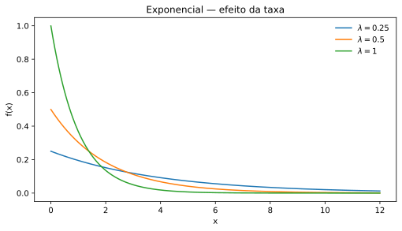
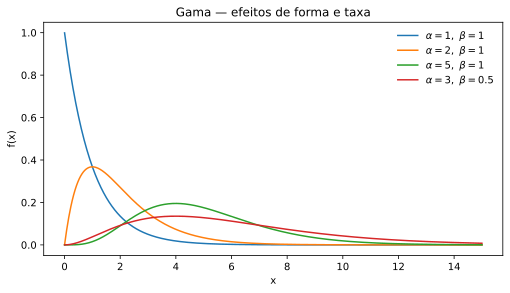
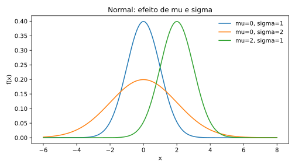
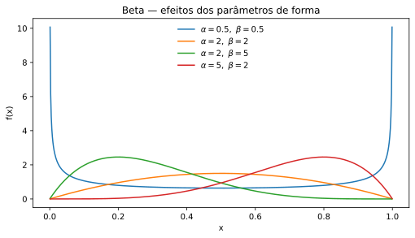
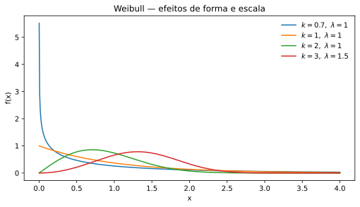
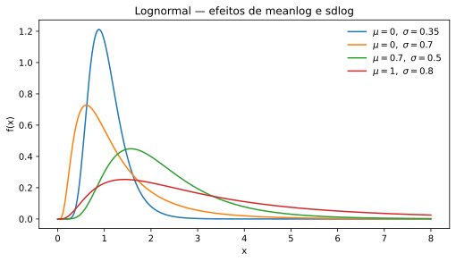
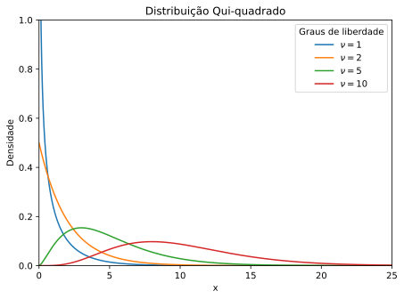

VARIÁVEIS ALEATÓRIAS
Variáveis Aleatórias Contínuas
Definições, principais distribuições, interpretação dos parâmetros, função de distribuição, aplicações e implementação no R.
1. Variável aleatória contínua
Uma variável aleatória contínua pode assumir valores em um conjunto não enumerável, normalmente um intervalo ou uma união de intervalos da reta real.
Sua distribuição pode ser descrita por uma função densidade de probabilidade \(f_X(x)\), que deve satisfazer
Para \(a<b\), a probabilidade de \(X\) assumir um valor entre \(a\) e \(b\) é
2. Função de distribuição acumulada
A função de distribuição acumulada de \(X\) é definida por
Aqui, \(x\) é o valor no qual a função acumulada é avaliada e \(t\) é apenas a variável de integração.
Quando \(F_X\) é diferenciável,
Consequentemente,
3. Esperança, variância e desvio-padrão
Se as integrais envolvidas existirem, a esperança de uma variável aleatória contínua é
A variância é
Uma forma equivalente e frequentemente mais conveniente é
O desvio-padrão é
4. Distribuição Uniforme Contínua
A distribuição uniforme contínua é adequada quando a variável assume valores em um intervalo limitado e a densidade permanece constante ao longo de todo esse intervalo.
Escrevemos
Função densidade
Função de distribuição acumulada
Esperança, variância e desvio-padrão
Termos. \(X\) é a variável aleatória; \(x\) representa um possível valor de \(X\); \(a\) é o limite inferior; \(b\) é o limite superior; \(f_X(x)\) é a densidade e \(F_X(x)=P(X\leq x)\) é a função de distribuição acumulada.
Aplicação. Pode ser usada para representar um instante de ocorrência dentro de uma janela de tempo quando não existe razão para privilegiar uma região específica do intervalo.
dunif(2, min = 0, max = 5) # densidade em x = 2 punif(2, min = 0, max = 5) # P(X <= 2) punif(4, 0, 5) - punif(1, 0, 5) # P(1 < X <= 4) qunif(0.95, min = 0, max = 5) # quantil de ordem 0,95 runif(1000, min = 0, max = 5) # 1000 observações simuladas
5. Distribuição Exponencial
A distribuição exponencial é frequentemente utilizada para modelar tempos de espera não negativos quando a taxa instantânea de ocorrência do evento é constante.
Função densidade
Função de distribuição acumulada
Esperança, variância e desvio-padrão
Termos. \(\lambda\) é o parâmetro de taxa, com \(\lambda>0\); \(x\) representa um tempo ou outra grandeza não negativa; \(e\) é a base do logaritmo natural; \(f_X(x)\) é a densidade e \(F_X(x)\) é a função acumulada.
Efeito do parâmetro. Quanto maior \(\lambda\), menor \(E(X)=1/\lambda\). Assim, valores elevados da taxa produzem maior concentração da distribuição próxima de zero.

Aplicação. Tempo entre chegadas em um processo de Poisson homogêneo ou tempo até a falha de um componente quando se admite taxa de falha constante.
dexp(5, rate = 0.2) # f(5) pexp(5, rate = 0.2) # P(X <= 5) 1 - pexp(5, rate = 0.2) # P(X > 5) qexp(0.95, rate = 0.2) # quantil rexp(1000, rate = 0.2) # simulação
6. Distribuição Gama
A distribuição Gama é uma família flexível para variáveis positivas e pode assumir diferentes graus de assimetria.
Na parametrização forma–taxa,
Função densidade
Função de distribuição acumulada
Para \(x\leq0\), \(F_X(x)=0\).
Esperança, variância e desvio-padrão
Termos. \(\alpha\) é o parâmetro de forma; \(\beta\) é o parâmetro de taxa; \(\Gamma(\alpha)\) é a função Gama; \(\gamma(\alpha,\beta x)\) é a função Gama incompleta inferior; \(x\) é um valor positivo da variável.
Uma parametrização alternativa utiliza a escala
Nesse caso,
Efeito dos parâmetros. O parâmetro \(\alpha\) altera a forma da distribuição. Quando \(\alpha=1\), a distribuição Gama se reduz à Exponencial. Mantendo \(\alpha\) fixo, aumentar a taxa \(\beta\) comprime a distribuição em direção a zero.

Aplicação. Pode modelar tempos acumulados até a ocorrência de eventos, durações de processos e outras grandezas positivas assimétricas.
dgamma(4, shape = 3, rate = 0.5) pgamma(4, shape = 3, rate = 0.5) qgamma(0.95, shape = 3, rate = 0.5) rgamma(1000, shape = 3, rate = 0.5) # parametrização equivalente por escala: dgamma(4, shape = 3, scale = 2)
7. Distribuição Normal
A distribuição Normal é contínua, simétrica e definida em toda a reta real. É uma das distribuições centrais da Estatística.
Função densidade
Função de distribuição acumulada
em que \(\Phi(\cdot)\) é a função de distribuição acumulada da Normal padrão.
Esperança, variância e desvio-padrão
Termos. \(\mu\) é a média e determina a localização da distribuição; \(\sigma\) é o desvio-padrão; \(\sigma^2\) é a variância; \(x\) representa um possível valor da variável; \(\Phi\) representa a acumulada da Normal padrão.
Efeito dos parâmetros. Alterar \(\mu\) desloca a distribuição horizontalmente. Aumentar \(\sigma\) aumenta a dispersão e reduz a altura máxima da densidade.

Aplicação. Erros de medição, características dimensionais de processos aproximadamente estáveis e, sob condições apropriadas, distribuições de médias amostrais.
dnorm(12, mean = 10, sd = 2) pnorm(12, mean = 10, sd = 2) # P(X <= 12) 1 - pnorm(12, mean = 10, sd = 2) # P(X > 12) pnorm(12, 10, 2) - pnorm(8, 10, 2) # P(8 < X <= 12) qnorm(0.975, mean = 10, sd = 2) rnorm(1000, mean = 10, sd = 2)
8. Distribuição Beta
A distribuição Beta é definida no intervalo \((0,1)\) e é bastante flexível. Por isso, pode ser útil para representar proporções contínuas.
Função densidade
Função de distribuição acumulada
Além disso, \(F_X(x)=0\) para \(x\leq0\) e \(F_X(x)=1\) para \(x\geq1\).
Esperança, variância e desvio-padrão
Termos. \(\alpha\) e \(\beta\) são parâmetros positivos de forma; \(B(\alpha,\beta)\) é a função Beta; \(I_x(\alpha,\beta)\) é a função Beta incompleta regularizada; \(x\) pertence ao intervalo \((0,1)\).
Efeito dos parâmetros. Quando \(\alpha=\beta\), a distribuição é simétrica em torno de \(0{,}5\). Quando \(\alpha>\beta\), há maior concentração em valores altos; quando \(\alpha<\beta\), a concentração tende a ocorrer em valores menores. Diferentes combinações podem produzir formatos bastante distintos.

Aplicação. Proporção contínua de utilização de capacidade, fração do tempo em operação e outras grandezas contínuas naturalmente limitadas ao intervalo entre 0 e 1.
dbeta(0.4, shape1 = 2, shape2 = 5) pbeta(0.4, shape1 = 2, shape2 = 5) qbeta(0.95, shape1 = 2, shape2 = 5) rbeta(1000, shape1 = 2, shape2 = 5)
9. Distribuição Weibull
A distribuição Weibull é particularmente importante em confiabilidade e análise de tempos até falha porque seu parâmetro de forma permite representar diferentes comportamentos da taxa de falha.
Função densidade
Função de distribuição acumulada
Esperança, variância e desvio-padrão
Termos. \(k\) é o parâmetro de forma; \(\lambda\) é o parâmetro de escala; \(\Gamma(\cdot)\) representa a função Gama; \(x\) é uma grandeza não negativa, frequentemente um tempo até falha.
Efeito dos parâmetros. Na parametrização apresentada, \(k<1\) corresponde a taxa de falha decrescente, \(k=1\) produz a distribuição Exponencial e \(k>1\) corresponde a taxa de falha crescente. O parâmetro \(\lambda\) controla a escala da distribuição.

Aplicação. Vida útil de rolamentos, componentes mecânicos, componentes eletrônicos e outros sistemas sujeitos a falhas.
dweibull(100, shape = 2, scale = 120) pweibull(100, shape = 2, scale = 120) 1 - pweibull(100, shape = 2, scale = 120) qweibull(0.95, shape = 2, scale = 120) rweibull(1000, shape = 2, scale = 120)
10. Distribuição Lognormal
Uma variável aleatória positiva \(X\) possui distribuição Lognormal quando seu logaritmo natural possui distribuição Normal.
Função densidade
Função de distribuição acumulada
Esperança, variância e desvio-padrão
Termos. \(\mu\) é a média de \(\ln X\); \(\sigma\) é o desvio-padrão de \(\ln X\); \(\sigma^2\) é a variância de \(\ln X\); \(\Phi\) é a função acumulada da Normal padrão; \(\ln\) representa o logaritmo natural.
Efeito dos parâmetros. \(\mu\) controla a localização na escala logarítmica. O aumento de \(\sigma\) produz maior dispersão e, em geral, maior assimetria à direita na escala original de \(X\).

Aplicação. Tempos de reparo, tamanhos de partículas e outras grandezas positivas geradas por efeitos aproximadamente multiplicativos.
dlnorm(), plnorm(),
qlnorm() e rlnorm(),
meanlog e sdlog são,
respectivamente, a média e o desvio-padrão de
\(\ln X\), e não de \(X\).
dlnorm(2, meanlog = 0, sdlog = 0.5) plnorm(2, meanlog = 0, sdlog = 0.5) qlnorm(0.95, meanlog = 0, sdlog = 0.5) rlnorm(1000, meanlog = 0, sdlog = 0.5)
11. Distribuição Qui-quadrado
A distribuição Qui-quadrado é uma distribuição contínua positiva determinada pelos graus de liberdade. Ela possui papel importante na inferência estatística, especialmente em procedimentos relacionados à variância.
Função densidade
Função de distribuição acumulada
Sua forma analítica pode ser expressa por meio da função Gama incompleta. Na prática, probabilidades e quantis são normalmente calculados numericamente.
Esperança, variância e desvio-padrão
Termos. \(\nu\) representa os graus de liberdade; \(x\) é um possível valor positivo da variável; \(\Gamma(\nu/2)\) representa a função Gama.
Efeito do parâmetro. Para poucos graus de liberdade, a distribuição apresenta forte assimetria à direita. À medida que \(\nu\) aumenta, a distribuição se desloca para a direita e se torna relativamente menos assimétrica.

Aplicação. Construção de intervalos de confiança e testes de hipóteses para a variância de uma população Normal, além de outros procedimentos inferenciais.
dchisq(8, df = 5) pchisq(8, df = 5) qchisq(0.95, df = 5) rchisq(1000, df = 5)
12. Como interpretar as funções das distribuições no R
Para as principais distribuições implementadas no R, os prefixos seguem um padrão.
| Prefixo | Finalidade | Exemplo |
|---|---|---|
d |
Densidade ou função de probabilidade | dnorm() |
p |
Função de distribuição acumulada | pnorm() |
q |
Função quantil | qnorm() |
r |
Geração de números pseudoaleatórios | rnorm() |
dnorm(x, ...),
por exemplo, retorna o valor da
densidade em \(x\), e não
\(P(X=x)\). Para qualquer variável aleatória contínua,
\[
P(X=x)=0.
\]
Referências
DEVORE, J. L. Probabilidade e Estatística para Engenharia e Ciências. São Paulo: Cengage.
MONTGOMERY, D. C.; RUNGER, G. C. Estatística Aplicada e Probabilidade para Engenheiros. Rio de Janeiro: LTC.
WALPOLE, R. E.; MYERS, R. H.; MYERS, S. L.; YE, K. Probabilidade e Estatística para Engenharia e Ciências. São Paulo: Pearson.
Para a parametrização computacional das distribuições,
consulte também a documentação correspondente à versão
do R utilizada. No próprio R, use
help("Distributions")
ou a ajuda específica de cada função, por exemplo
?dnorm, ?pgamma e
?rweibull.